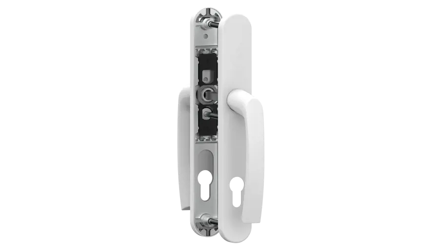
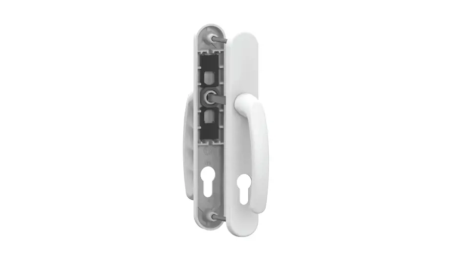
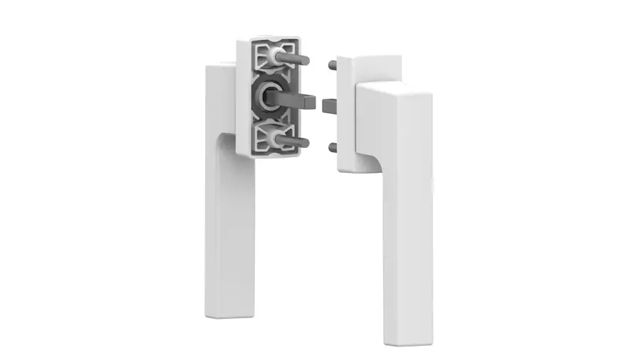
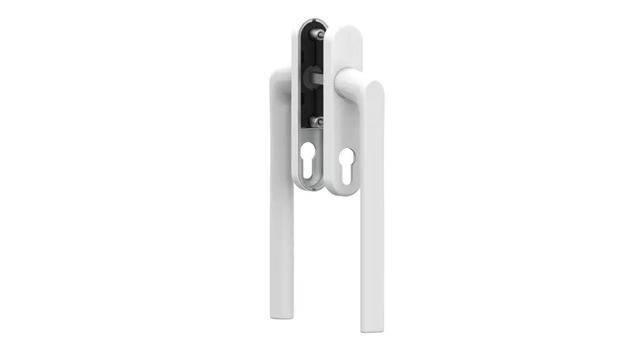
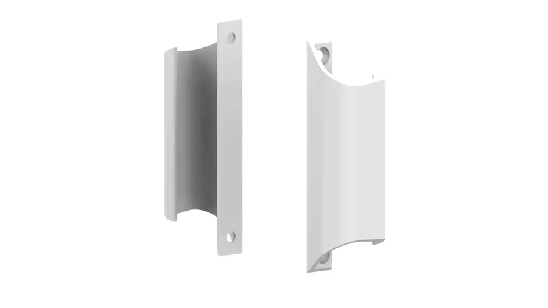
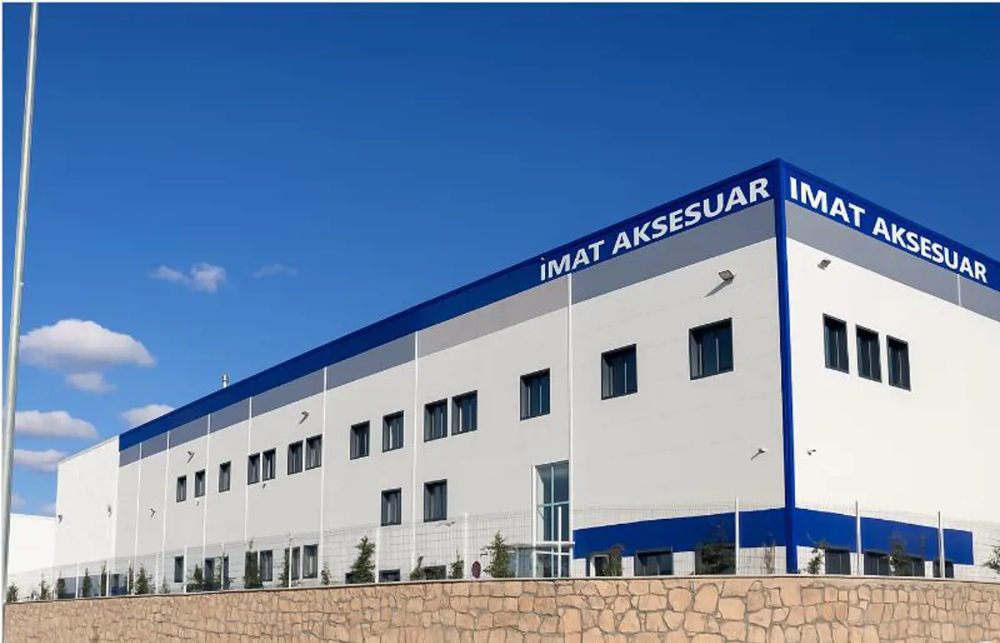

PVC, ahşap ve alüminyum doğrama sistemleri için kapı kolu, pencere kolu, sürme sistem ve tutamak üretiyoruz. Kendi kalıphanemiz ve tam otomatik üretim hattımızla ISO 9001 ve TSE standartlarında, Avrupa'ya ihraç edilen kalite.

Kapı kolundan sürme sistem tutamaklarına kadar dört ana ürün grubuyla PVC, ahşap ve alüminyum doğramalara uyumlu çözümler sunuyoruz.

Farklı malzeme ve mekânlara uygun, modern ve dayanıklı kapı kolu çözümleri.
Ürünleri Gör
PVC ve ahşap pencere sistemleri için ergonomik, uzun ömürlü kol modelleri.
Ürünleri Gör
Sürgülü sistemlere özel, ergonomik tutuş sağlayan şık ve kullanışlı kollar.
Ürünleri Gör
Kalıp tasarımından metal işlemeye, kendi bünyemizde yürüttüğümüz üretim süreçleriyle kaliteyi baştan sona kendimiz garanti ediyoruz.
1995'te kurulan kalıphanemiz ve metal döküm bölümümüzle tasarımdan üretime tüm süreç kontrolümüzde.
Alman teknik iş birliğiyle kurulan otomatik ispanyolet üretim hattı, kesintisiz ve standart üretim sağlar.
ISO 9001:2015 ve TSE belgeli üretim süreçleriyle her partide aynı kalite standardını garanti ediyoruz.
Üretimimizin önemli bir bölümünü başta Almanya olmak üzere Avrupa pazarlarına ihraç ediyoruz.
1997'de kurulan metal işleme bölümümüz Alman teknik ortaklığıyla hayata geçirildi.
İş ortaklarımızla kurduğumuz güçlü ilişkiler ve hızlı çözüm anlayışıyla güven yaratıyoruz.
PVC pencere sektörünün hızla geliştiği dönemde menteşe ve kol imalatıyla başladığımız üretim yolculuğumuzu, kendi kalıphanemiz, metal işleme ve döküm bölümlerimizle büyüttük. 2004'ten bu yana odağımız kapı ve pencere kolu üretiminde.
